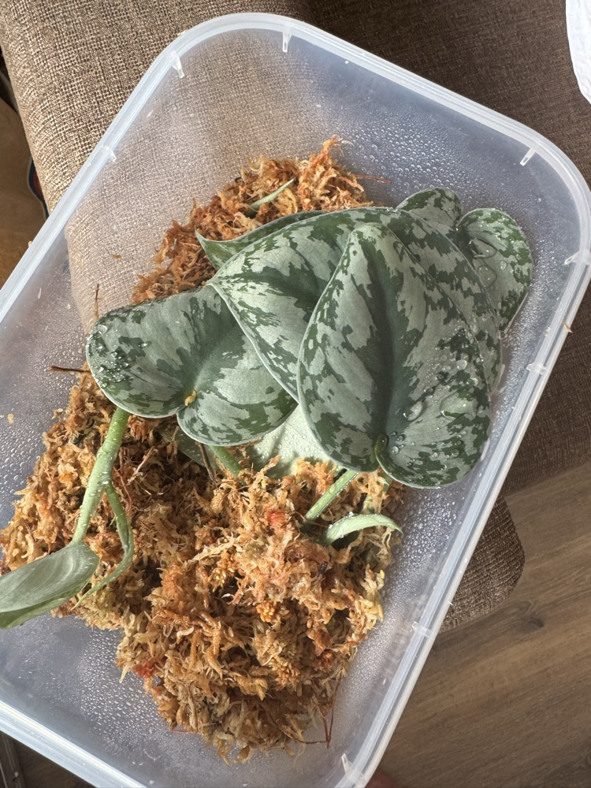
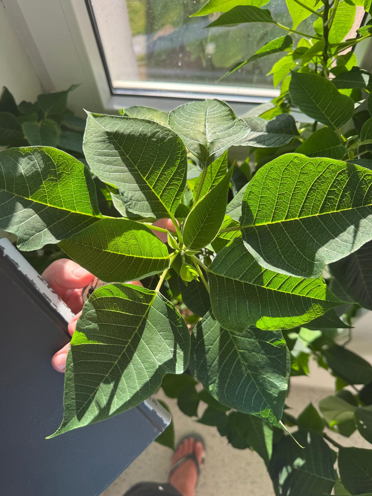
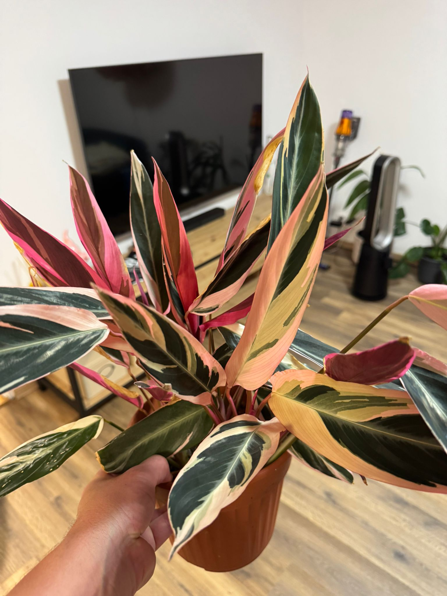
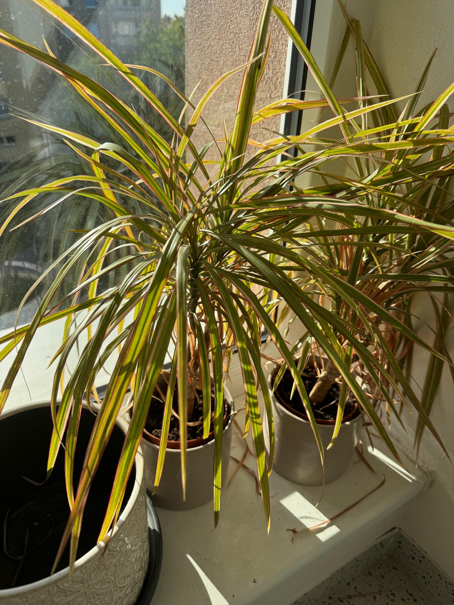

Epipremnum Njoy
Potos
SubstrátAroid Classic (Kokosový substrát 40%, Kokosové chipsy 30%, Perlit 30%)
Popis & PůvodMutace potosu s bílo-zeleným panašováním vyvinutá v laboratořích. Botanický původ: tropická Asie. Roste pomaleji. Skvěle prosperuje v Aroid mixu na DIY pletivové tyči s rašeliníkem.
Péče & HnojeníPrvní 2 týdny po přesazení zalévat výhradně s Canna Rhizotonic pro stimulaci kořenů. Poté nasadit dvousložkovou Canna Aqua Vega (2ml/L každé složky) podávanou přes časovaný knot nebo vrchem.
Teplota & VlhkostIdeál 18–25 °C. Vlhkost vzduchu optimálně 50–70 %, v suchém prostředí bílé části listů hnědnou. Průhledný kelímek slouží jako vizuální debug, aby substrát nebyl trvale černý a přelitý.
Zimní péče & SezónnostV zimě omezit frekvenci doplňování nádržky s knotem (rostlina pije méně).. Hnojit max. 1x za měsíc slabou poloviční dávkou. Chránit před chladným průvanem při větrání.


Epipremnum aureum "Neon"
Potos Neon
SubstrátAroid Classic (Kokosový substrát 40%, Kokosové chipsy 30%, Perlit 30%)
Popis & PůvodBleskově rostoucí liána s jasně neonovými listy z Francouzské Polynésie. Miluje šplhání po vlhké DIY pletivové tyči s rašeliníkem, což stimuluje masivní zvětšování listových čepelí.
Péče & HnojeníPo přesazení do kelímku nastartovat kořeny pomocí Rhizotonicu. Následně hnojit Canna Aqua Vega každých 14 dní v plné dávce. Vyžaduje silné rozptýlené světlo, jinak listy tmavnou do obyčejné zelené.
Teplota & VlhkostŠiroké rozmezí 18–27 °C, v zimě nesmí teplota klesnout pod 15 °C. Vlhkost zvládá i běžnou bytovou, ale v lehkém kokosovém mixu s vlhčeným mechem ukáže nejlepší přírůstky.
Zimní péče & SezónnostMírně roste i v zimě. Hnojení omezit na 1x za měsíc s poloviční koncentrací. Přes kelímek doplňovat nádržku časovaného knotu až tehdy, když barva kokosu viditelně zesvětlá ze sytě hnědé.


Philodendron micans
Filodendron sametový
SubstrátAroid Classic (Kokosový substrát 40%, Kokosové chipsy 30%, Perlit 30%)
Popis & PůvodPopínavý filodendron se sametovými bronzovo-červenými listy z Karibiku. Pro zdravý růst nutně vyžaduje neustále vlhkou DIY pletivovou tyč s mechem, do které jeho křehké vzdušné kořeny hluboce vrůstají.
Péče & HnojeníCitlivější na přehnojení a usazování solí v kokosu. Po úvodním prokořenění s Rhizotonicem dávkovat Canna Aqua Vega v mírnější koncentraci (1.5 ml/L) každé 2 až 3 týdny. Využít systém časovaného knotu.
Teplota & VlhkostTeplomilný druh: ideál 18–24 °C, v zimě striktně nad 16 °C. Vyžaduje vyšší vzdušnou vlhkost (nad 60 %), jinak listy ztrácejí sametový lesk a schnou jim špičky.
Zimní péče & SezónnostV zimě prochází fází klidu. Hnojení omezit max. na 1x za 6 týdnů v minimální dávce. Skrz průhledný kelímek kontrolovat, zda spodní polovina substrátu nestojí v trvalé, neprodyšné bažině.


Philodendron red emerald
Filodendron
SubstrátAroid Classic (Kokosový substrát 40%, Kokosové chipsy 30%, Perlit 30%)
Popis & PůvodVzpřímená robustní liána s velkými šípovitými listy a vínově červenými stonky z deštných pralesů Kolumbie. Miluje pevné mechanické upevnění k tvojí DIY zinkové tyči napěchované rašeliníkem.
Péče & HnojeníVelký a rychlý jedlík. Po úvodní startovací fázi s Rhizotonicem vyžaduje v plné sezóně poctivé dávkování dusíku z Canna Vega A+B v plné síle každých 14 dní pro nárůst velkých zdravých listů.
Teplota & VlhkostTeplota 18–25 °C, v zimě minimum 15 °C. Vlhkost vzduchu střední až vyšší (50 %+). Rostlina tvoří tlusté provazovité kořeny, které v kelímku uvidíš plazit se po stěnách velmi brzy.
Zimní péče & SezónnostV zimě v suchém vzduchu trpí na svilušky (listy otírat od prachu). Hnojení snížit na 1x za měsíc. Substrát udržovat mírně vlhký přes časovaný knot, nenechat dno kelímku trvale utopené v roztoku.


Philodendron Painted Lady
Filodendron
SubstrátAroid Classic (Kokosový substrát 40%, Kokosové chipsy 30%, Perlit 30%)
Popis & PůvodSběratelský hybrid s neonově žluto-zelenými listy a zářivě růžovo-červenými řapíky. Střední tempo růstu. Nejcitlivější kousek ze šplhavců, který nutně potřebuje lehký vzdušný mix a vlhký mech.
Péče & HnojeníPro zachování luxusního panašování vyžaduje precizní přísun mikroprvků. Po úvodním prokořenění s Rhizotonicem aplikuj minerální hnojivo Canna Aqua Vega stabilně každých 14 dní po celé jaro a léto.
Teplota & VlhkostStabilní teplo 20–26 °C, zimní poklesy pod 16 °C nesnáší. Vyšší vlhkost (55–75 %) zaručí hladké rozbalování listů. Skrz kelímek přísně kontrolovat cyklus vysychání substrátu.
Zimní péče & SezónnostV zimě nutně vyžaduje nejjasnější místo, jinak nové listy rostou čistě zelené bez kresby (ideální je přisvěcování). V zimě zálivku drasticky omezit a hnojení téměř úplně stopnout.


Maranta fascinator
Maranta tricolor
SubstrátHydratační prales (Kokosový substrát 60%, Kokosové chipsy 20%, Perlit 20%)
Popis & Původ"Modlící se rostlina" ze spodních pralesních pater Brazílie. Na noc listy vertikálně napřimuje a zavírá. Na rozdíl od lián se přirozeně plazí – na tvém DIY mechovém polštáři vytvoří úžasně hustý keř.
Péče & HnojeníJemné kořeny jsou extrémně náchylné k popálení solemi. Používej výhradně poloviční koncentraci Canna hnojiva jednou za 3 týdny (po prokořenění s Rhizotonicem). Vyžaduje hustší hydratační pralesní mix (60% kokos).
Teplota & VlhkostStabilní 18–23 °C. Nesnáší průvan, teplotní šoky a suchý vzduch (způsobuje kroucení listů). Vyžaduje vysokou vlhkost (60–80 %). Mix v kelímku musí přes plast vypadat nonstop tmavý a orosený.
Zimní péče & SezónnostV zimě spí a vůbec se nehnojí. Vodu v zásobníku drž na absolutním minimu, umísti ji dál od sálajících radiátorů topení, ale hlídej přes kelímek, aby substrát v jádru fatálně nevyschl na prach.


Peperomia prostrata
„Želvičky"
SubstrátUltra-vzdušný (Kokosový substrát 20%, Kokosové chipsy 40%, Perlit 40%)
Popis & PůvodDrobné plazivé „želvičky“ z Amazonie rostoucí jako epifyt v korunách stromů, kde bleskově vysychají. Vyžadují upravený sukulentní mix (chipsy a perlit po 40 %, kokosový substrát jen 20 %).
Péče & HnojeníAbsolutně bez knotu! Pouze jednorázové spodní namáčení kelímku na cca 10 minut jednou za čas. Po úvodní fázi s Rhizotonicem hnojit velmi slabě (třetinová dávka Canny) maximálně 1x za měsíc v sezóně.
Teplota & VlhkostTeplota 18–24 °C, v zimě minimálně 15 °C. Vlhkost vzduchu zvládá standardní bytovou díky tlusté voskové vrstvě listů. Vizuální debug: kelímek musí kompletně zbělat/vyschnout a lístky při stisku gumovatět jako rozinky.
Zimní péče & SezónnostV zimě zalévat extrémně málo (klidně 1x za 3 týdny) až po totálním proschnutí a jasném změknutí listů. V zimě vůbec nehnojit. Při sebemenším přelíčení v chladnějším období báze stonků bleskově uhnije.


Peperomia Raindrop
Peperomie polybotrya
SubstrátUltra-vzdušný (Kokosový substrát 20%, Kokosové chipsy 40%, Perlit 40%)
Popis & PůvodKompaktní vzpřímená rostlina s tlustými lesklými listy ve tvaru dešťových kapek z tropické Jižní Ameriky. Roste jako pevný samostojný stromeček, nepotřebuje tyč. Vyžaduje sukulentní mix se zvýšeným podílem chipsů a perlitu.
Péče & HnojeníZálivka výhradně spodním namáčením po kompletním vyschnutí celého kelímku. V sezóně (po úvodním zakořenění s Rhizotonicem) hnojit 1x za 3 týdny poloviční koncentrací dvousložkové Canny.
Teplota & VlhkostOptimálně 18–25 °C. Pozor na ledové okenní parapety v zimě – chlad od kořenů nesnáší. Vlhkost vzduchu jí vyhovuje nižší bytová (40–50 %). Dokud je přes kelímek vidět tmavý vlhký kokos, nezalévat.
Zimní péče & SezónnostV zimě zcela vynechat hnojení. Žízeň indikuje mírný pokles řapíků dolů a gumovatění listových čepelí (listy lze ohýbat jako měkký ohebný plast). Při přelíčení v zimním chladu listy zčernají a bleskově opadají.


Migrenovník
Plectranthus amboinicus
SubstrátUltra-vzdušný (Kokosový substrát 20%, Kokosové chipsy 40%, Perlit 40%)
Popis & PůvodSilně aromatický dužnatý keřík s chlupatými listy z tropické Afriky. Roste divoce a velmi rychle. Ideální je udržovat kompaktní tvar pravidelným zaštipováním vršků, které okamžitě větví kytku do hustého keře. Sázet do sukulentního mixu.
Péče & HnojeníZalévat formou prolití svrchu (přebytek nechat ihned odtéct dírkami) až po kompletním vyschnutí kelímku. Jako jediný ze sukulentní skupiny snese v létě plnou dávku Canna Vega 1x za 14 dní (po úvodním startu s Rhizotonicem).
Teplota & VlhkostMiluje teplo a slunce (20–26 °C). Vlhkost vyžaduje nízkou, dry vzduch z topení zvládá skvěle. Listy nikdy nerosit rozprašovačem, dělají se na nich skvrny a zahnívají.
Zimní péče & SezónnostV zimě vyžaduje absolutně nejsvětlejší jižní/východní okno, jinak stonky slábnou a vytahují se za světlem. Hnojit max. 1x za 6 týdnů, vodu dávat minimálně. Žízeň poznáš bezpečně – listy jsou hadrové, měkké a lehce šednou.


Hoya pubicalyx
Voskovka
SubstrátUltra-vzdušný (Kokosový substrát 20%, Kokosové chipsy 40%, Perlit 40%)
Popis & PůvodFilipínská popínavá liána s tuhými listy se stříbřitými skvrnami. Vyžaduje vysoce drenážní sukulentní mix (50 % perlitu a chipsů). Jako oporu jí vyrob žebříček nebo kruh z čistého suchého jarního bambusu bez mechu.
Péče & HnojeníNesnáší stabilní mokro u kořenů, bleskově by shnila (žádný knot!). Pouze spodní zálivka po vyschnutí. V sezóně hnojit 1x za 3 týdny poloviční dávkou Canny, na konci srpna hnojení stopnout pro vyzrání pletiv.
Teplota & VlhkostTeplota 18–26 °C, snese krátkodobý pokles k 15 °C. Vlhkost vzduchu stačí běžná bytová. Přes průhledný plast kelímku pravidelně kontrolovat stav a barvu kořenů.
Zimní péče & SezónnostZimní sucho a chladnější světlé místo jsou kritické pro budoucí kvetení v noci vonících polokoulí. Zálivka v zimě téměř nulová – teprve tehdy, když se běžně dřevnatý list podélně ohne do měkkého korýtka. V zimě nehnojit.


Tradescantia nanouk
Voděnka růžová
SubstrátHydratační prales (Kokosový substrát 60%, Kokosové chipsy 20%, Perlit 20%)
Popis & PůvodRobustní šlechtěná voděnka s tlustými stonky a masivními růžovo-fialovými listy. Vyžaduje extrémní množství světla pro udržení barev. Pravidelně stříhat dlouhé vršky. Vyžaduje humóznější hydratační mix (60% kokos).
Péče & HnojeníVelmi hladový a žíznivý metabolický rychlík. V sezóně spotřebuje plnou dávku hnojiva Canna každých 10–14 dní (po úvodním prokořenění s Rhizotonicem). Systém časovaného knotu zde funguje perfektně.
Teplota & VlhkostRozmezí 15–25 °C. Vlhkost vzduchu stačí průměrná. Nesnáší polévání listů shora, voda se drží v paždí tlustých listů a ty hnijí. Skrz kelímek doplňovat nádržku knotu, jakmile substrát v horní třetině zesvětlá.
Zimní péče & SezónnostV teplých a tmavých bytech v zimě strádá (spodky hnědnou, stonky slábnou). Ideální zimování: snížit teplotu na cca 16 °C, omezit vodu na minimum a hnojit max. 1x za měsíc.


Tradescantia zebrina
Voděnka pruhovaná
SubstrátHydratační prales (Kokosový substrát 60%, Kokosové chipsy 20%, Perlit 20%)
Popis & PůvodNezničitelná stříbřitě fialová voděnka z Mexika. Je to metabolický rychlík, který v hydratačním pralesním mixu (60% kokos) na časovaném knotu poroste zběsilým tempem a bezpečně otestuje funkčnost a propustnost tvého nového setupu.
Péče & HnojeníPo přesazení do kelímku bleskově prokoření díky startovacímu Rhizotonicu. V plném růstu hnojit každé 2 týdny plnou dávkou Canna Aqua Vega. Snese jak sucho, tak náhodné přelíčení.
Teplota & VlhkostExtrémně adaptabilní (12–25 °C), vzdušnou vlhkost vůbec neřeší. Skrz průhledný plast kelímku uvidíš masivní, hustou síť bílých kořenů během několika málo týdnů.
Zimní péče & SezónnostV zimě se kvůli nedostatku světla vytahuje do dálky (velké mezery mezi listy). Omezit zálivku a hnojit jen 1x za měsíc. Na jaře je ideální vytahané šlahouny radikálně ostříhat a uřezané vršky napíchat zpět do kokosu.


Okrasná kopřiva
Coleus / Pochvatec
SubstrátHydratační prales (Kokosový substrát 60%, Kokosové chipsy 20%, Perlit 20%)
Popis & PůvodPestrobarevný Pochvatec z tropické jihovýchodní Asie. Roste vzpřímeně jako polokeř. Vyžaduje teplé a maximálně osluněné stanoviště na okně pro syté vybarvení vzorů. Perfektně prosperuje v hydratačním mixu (60% kokos).
Péče & HnojeníAbsolutně největší žrout ze všech skupin (Heavy Feeder). V létě vyžaduje hnojení klidně každý týden plnou dávkou Canny, jinak listy okamžitě zblednou. Její časovaný knot bude vysychat nejrychleji.
Teplota & VlhkostTeplo (20–26 °C) a vzdušná vlhkost střední. Skrz průhledný kelímek uvidíš obří spotřebu vody. Jakmile kokos začne světlat, okamžitě doplňuj nádržku, jinak rostlina dramaticky svěsí všechny listy dolů.
Zimní péče & SezónnostV zimě v bytě často hyne na nedostatek světla a mšice. Držet na nejjasnějším okně, hnojení snížit na 1x za 3 týdny. Často se na podzim omlazuje čerstvými řízky do vody pro novou jarní generaci.

Aglaonema Silver Bay
Silver Bay / Queen
SubstrátAroid Classic (Kokosový substrát 40%, Kokosové chipsy 30%, Perlit 30%)
Popis & PůvodExtrémně nenáročná a vytrvalá rostlina z podrostů tropických deštných lesů jihovýchodní Asie. Roste jako hustý přízemní keř s nádherně stříbřitě zeleným vzorem na širokých listech.
Péče & HnojeníNevyžaduje intenzivní výživu ani přehnanou péči. V plném růstu hnojit Canna Aqua Vega 1x za 3 týdny v poloviční dávce. Kokosový mix udržovat mírně navlhlý, ale nepřelévat. Čistí vzduch v místnosti.
Teplota & VlhkostIdeál 18–24 °C. Skvěle snese i horší světelné podmínky, ideální na poličky dál od okna. Vzdušná vlhkost jí vyhovuje běžná pokojová, na suchý vzduch nereaguje citlivě.
Zimní péče & SezónnostV zimě upadá do klidové fáze a pije minimálně. Drasticky omezit zálivku a hlídat barvu mixu skrz průhledný kelímek. Striktně chránit před chladem a průvanem pod 15 °C, jinak jí uhnijí řapíky.

Zamioculcas zamiifolia
Zamiokulkas
SubstrátUltra-vzdušný (Kokosový substrát 20%, Kokosové chipsy 40%, Perlit 40%)
Popis & PůvodSukulentní tank pocházející ze suchých oblastí východní Afriky. Pod zemí schovává obří bramborovité hlízy a tlusté řapíky, ve kterých drží vodu na celé měsíce dopředu. Absolutně neprůstřelná kytka.
Péče & HnojeníZabije ji jedině tvoje přehnaná péče a permanentně mokrý knot. Zalévat až tehdy, když je mix totálně vyschlý a kelímek lehký jako pírko. Hnojení stačí minimální, max. 1x za měsíc v létě.
Teplota & VlhkostTeplota 18–26 °C. Zvládá stín, polostín i suchý vzduch z radiátorů. Vyžaduje extra podíl perlitu a chipsů pro okamžitý odtok vody z dosahu citlivých podzemních hlíz.
Zimní péče & SezónnostV zimě upadá do totálního vegetativního útlumu. Zalévat klidně jen jednou za měsíc čistou vodou. Nehnojit v zimě vůbec. Pokud dostane v zimě vodu víckrát, hlízy prasknou a stonky odspodu zčernají.

Epipremnum 'Marble Queen'
Potos mramorový
SubstrátAroid Classic (Kokosový substrát 40%, Kokosové chipsy 30%, Perlit 30%)
Popis & PůvodNádherná popínavá liána z Francouzské Polynésie s hustým bílo-krémovým mramorovaným vzorem. Kvůli vysokému podílu bílých nefunkčních tkání roste o něco pomaleji než klasický zelený potos.
Péče & HnojeníPro udržení luxusní bílé kresby vyžaduje výrazně více světla než ostatní potosy. V sezóně hnojit Canna Aqua Vega pravidelně každých 14 dní. Skvěle zvládá růst na časovaném knotu s pletivovou tyčí.
Teplota & VlhkostIdeál 18–25 °C. Vyžaduje stabilní střední vlhkost, v suchém panelákovém vzduchu bílé mapy na listech hnědnou a odumírají. Vzdušné kořeny rády vrůstají do vlhkého mechu na tyči.
Zimní péče & SezónnostV zimě zajistit nejjasnější možné okno v domě, jinak nové listy začnou tmavnout a mramorování zakrní. Zálivku přes knot omezit, kontrolovat barvu kokosu skrz plast kelímku a hnojit jen 1x za měsíc.

Schefflera arboricola
Šeflera stromovitá
SubstrátUltra-vzdušný (Kokosový substrát 20%, Kokosové chipsy 40%, Perlit 40%)
Popis & PůvodStálezelený polodřevnatý stromeček pocházející z Taiwanu. Má typické dlanitě složené prstovité listy, které rostou z centrálního řapíku. Roste elegantně vertikálně do výšky.
Péče & HnojeníNesnáší permanentní bláto u kořenů, vyžaduje kompletní proschnutí mixu v kelímku. Žádný trvalý knot. Hnojit v sezóně 1x za 14 dní poloviční dávkou dvousložkové Canny. Vyžaduje velmi vzdušný, lehký substrát.
Teplota & VlhkostTeplota v rozmezí 16–24 °C. Miluje světlé stanoviště, snese i mírné ranní slunce. Vzdušná vlhkost jí vyhovuje průměrná pokojová, na dotek jsou listy pevné a kožovité.
Zimní péče & SezónnostV zimě reaguje na jakýkoliv stres (přelití, chlad od kořenů z parapetu nebo ledový průvan) bleskovým radikálním shozením celých zelených listů. Zálivku v zimě omezit na nezbytné minimum a nehnojit.

Peperomia obtusifolia
Pepřinec tupolistý
SubstrátUltra-vzdušný (Kokosový substrát 20%, Kokosové chipsy 40%, Perlit 40%)
Popis & PůvodRobustní, stará kytka zachráněná z kanceláře. Původem z Floridy a Karibiku. Má tlusté, masité stonky a velké kulaté listy, které fungují jako rezervoár vody. Roste přirozeně jako těžký keř či převis.
Péče & HnojeníAktuálně vyčerpaná a světlá z kanclu. Po přesazení z ubité hlíny nastartovat kořeny Rhizotonicem. Jakmile v kokosu ožije, hnojit Canna Aqua Vega 1x za 14 dní v plné dávce pro návrat temně zeleného lesku.
Teplota & VlhkostOptimálně 18–25 °C. Vyžaduje jasné rozptýlené světlo, ale bez přímého poledního úpalu. Vlhkost vzduchu zvládá standardní. Nesnáší těžkou tyč z mechu, raději ji podepři hladkým bambusem.
Zimní péče & SezónnostV zimě držet v suchu a teple. Žízeň indikuje spolehlivě: tlusté listy ztratí pevnost a dají se ohnout a deformovat jako guma (lístky gumovatí). Zalévej až po tomhle signálu spodním namáčením kelímku.

Monstera deliciosa
Monstera skvostná
SubstrátAroid Classic (Kokosový substrát 40%, Kokosové chipsy 30%, Perlit 30%)
Popis & PůvodAbsolutní ikona tropických pralesů Mexika a Střední Ameriky. Obří robustní šplhavá liána, která v dospělosti tvoří charakteristické hluboké děrování listů (fenestrace). Vyžaduje masivní prostor a pevnou oporu.
Péče & HnojeníV létě je to brutální jedlík (Heavy Feeder). Hnojit Canna Aqua Vega každých 10–14 dní v plné palbě. Dlouhé vzdušné kořeny nikdy neřezat, ale systematicky je směřovat dolů do kokosového mixu v kelímku.
Teplota & VlhkostIdeál 18–26 °C, miluje vyšší vzdušnou vlhkost (nad 60 %). Skrz průhledný kelímek uvidíš obří, tlusté provazovité kořeny. Brzy bude potřebovat tvoji velkou DIY pletivovou tyč s vlhkým rašeliníkem.
Zimní péče & SezónnostV zimě mírně zpomalí růst. Hnojení stáhnout na 1x za měsíc s poloviční koncentrací. Hlídat přelití spodku kelímku přes časovaný knot – kokosový mix musí mezi zálivkami viditelně zesvětlat do světle hnědé.

Strelitzia nicolai
Strelície bílá
SubstrátHydratační prales (Kokosový substrát 60%, Kokosové chipsy 20%, Perlit 20%)
Popis & PůvodMajestátní architektonická kytka s obřími banánovými listy pocházející z Jižní Afriky. Královna interiéru s neskutečně rychlým metabolismem. Listy se přirozeně ve větru/průvanu třepí, což je její obranný mechanismus.
Péče & HnojeníAbsolutní monstrózní žrout vody a dusíku. Vyžaduje výživný hydratační mix (60 % kokos). V létě pije hektolitry přes knot a potřebuje plné hnojení s Canna Aqua Vega klidně každý týden, jinak listy začnou žloutnout.
Teplota & VlhkostMiluje horko (20–28 °C) a vyžaduje absolutní maximum přímého slunce přímo u okna. Zvládá suchý vzduch z topení, ale pro bezchybný vzhled velkých čepelí ocení pravidelné otírání listů mokrým hadříkem.
Zimní péče & SezónnostV zimě trpí nedostatkem světla. Přesunout ji na nejjasnější možné místo k jižnímu oknu. Zálivku omezit, ale přes plast kelímku hlídat, aby kokos nikdy totálně nevyschl na prach, jinak jí popraskají řapíky. Hnojit 1x za měsíc.

Phalaenopsis
Orchidej Můrovec
SubstrátUltra-vzdušný (Čistá hrubá kůra / kousky chipsů, bez jemného kokosového substrátu)
Popis & PůvodČistě epifytická orchidej z tropické Asie rostoucí v přírodě v kůře stromů. Její kořeny nutně potřebují nonstop přístup vzduchu a světla pro fotosyntézu – proto je tvůj průhledný kelímek absolutně bezchybné řešení.
Péče & HnojeníŽádná klasická zálivka ani knot! Využij stoprocentní vizuální debug: dokud jsou kořeny v kelímku jasně zelené, kytka má vody dost. Jakmile zešednou/stříbřitě zmatní, namoč kelímek na 15 minut do vody se slabým hnojivem a vyndej.
Teplota & VlhkostTeplota 18–24 °C. Nesnáší přímé spalující slunce, ale potřebuje hodně rozptýleného světla pro stimulaci tvorby nových stvolů s poupaty. Vlhkost vzduchu stačí běžná.
Zimní péče & SezónnostV zimě hlídat chlad od okenního skla. Pokud kořeny zůstanou v šedém stavu příliš dlouho, rostlina usne a nenasadí květy. V zimě hnojit maximálně jednou za dva měsíce ultra slabým roztokem. Používat tyčky na stvoly.

Scindapsus pictus
Trebie
SubstrátAroid Classic (Kokosový substrát 40%, Kokosové chipsy 30%, Perlit 30%)
Popis & PůvodNádherná popínavá liána z deštných pralesů jihovýchodní Asie. Listy jsou asymetrické, tlusté, mají matný sametový povrch s charakteristickým stříbřitým skvrnitým vzorem. Aktuálně ti bezpečně koření v propagačním boxu v rašeliníku.
Péče & HnojeníPři přesazení z mechu do kelímku nechat na kořenech trochu rašeliníku a prolít Rhizotonicem. V plném růstu hnojit Canna Aqua Vega 1x za 14 dní přes časovaný knot. Úžasný adept na šplhání po tvojí DIY mechové tyči.
Teplota & VlhkostTeplota 18–24 °C, miluje střední až vyšší vzdušnou vlhkost. Skvěle signalizuje žízeň: jakmile má nedostatek vody, celé listy se začnou podélně rolovat do těsných ruliček. Jakmile dostane pít, do pár hodin se narovná.
Zimní péče & SezónnostV zimě roste pomalu a pije minimálně. Sleduj barvu kokosového mixu přes průhledný plast kelímku – doplňuj rezervoár až po řádném vyschnutí a zesvětlení substrátu. Hnojení v zimě omezit na 1x za měsíc.


Philodendron Birkin
Filodendron
SubstrátAroid Classic (Kokosový substrát 40%, Kokosové chipsy 30%, Perlit 30%)
Popis & PůvodKrásná mutace druhu Rojo Congo s hustým a zářivě bílým žíháním listů ze Střední a Jižní Ameriky. Roste spíše vzpřímeně jako polokeř. Mix potřebuje lehký a vzdušný, pro bezpečný a mohutný růst listů ocenci DIY tyč.
Péče & HnojeníPrvní dny po usazení nebo přesazení podpořit kořeny Rhizotonicem. Pro udržení sytého žíhání a tvorbu nových zdravých listů potřebuje stabilní přísun dusíku a mikroprvků, hnojit v létě s Canna Aqua Vega každých 14 dní.
Teplota & VlhkostTeplomilná kytka (18–25 °C). Klíčové je světlé místo bez přímého poledního úpalu – při nedostatku světla nové listy tmavnou zpět do zelené a ztrácejí kresbu. Vlhkost vzduchu držet nad 50 %.
Zimní péče & SezónnostV zimě roste minimálně a pije málo. Skrz kelímek hlídat světlání kokosového mixu a rezervoár časovaného knotu doplňovat až po mírném proschnutí. Chránit před ledovým průvanem při zimním větrání.


Maranta leuconeura
Lemon lime
SubstrátHydratační prales (Kokosový substrát 60%, Kokosové chipsy 20%, Perlit 20%)
Popis & Původ"Králičí stopy" ze stinného podrostu brazilských pralesů. Večer sklápí listy nahoru. Ve vodě už vybudovala masivní, tlustou síť zdravých kořenů, takže je v dokonalé kondici pro přesazení do tvého hustšího pralesního mixu.
Péče & HnojeníPo přesazení ihned prolít roztokem Rhizotonicu pro adaptaci vodních kořenů na pevné médium. V sezóně hnojit velmi opatrně poloviční koncentrací Canna Aqua Vega jednou za 3 týdny, má extrémně jemné vlasové kořínky.
Teplota & VlhkostStabilní 18–23 °C bez výkyvů a ledového průvanu. Vyžaduje permanentně vysokou vlhkost. Substrát udržuj trvale navlhlý (skrz kelímek uvidíš orosené stěny a tmavý kokos), časovaný knot nenechávej úplně proschnout na troud.
Zimní péče & SezónnostZimní spánek dál od sálajících radiátorů. V zimě vůbec nehnojit, hladinu spodního rezervoáru držet na absolutním minimu, ale vizuálně hlídat, aby substrát v jádru kelímku fatálně nepřeschl na prach.

Vánoční hvězda
Euphorbia pulcherrima
SubstrátUltra-vzdušný (Kokosový substrát 20%, Kokosové chipsy 40%, Perlit 40%)
Popis & PůvodPochází z Mexika, kde roste jako divoký mohutný keř. Má silný dřevnatý základ. Pozor při střihu – jako každý pryšec obsahuje jedovaté a dráždivé bílé mléko.
Péče & HnojeníZásadně bez permanentního knotu. Zalévat až po hlubokém proschnutí kelímku/květináče svrchu nebo spodním namáčením. V sezóně hnojit Canna Aqua Vega 1x za 3 týdny. Pro udržení hustoty keře ji po jaru nebát se radikálně seříznout.
Teplota & VlhkostStabilní pokojové teplo (18–24 °C). Extrémně alergická na studené kořeny a ledový průvan při větrání – okamžitě reaguje žloutnutím a shozením celých zelených listů. Vlhkost vzduchu stačí standardní.
Zimní péče & SezónnostV zimě pije minimálně, hlídat prosychání. Pokud bys chtěl, aby na Vánoce zčervenala, vyžaduje od podzimu striktní fotoperiodu (14 hodin naprosté tmy denně). Bez zatemňování zůstane celoročně krásně zelená. V zimě nehnojit.

Stromanthe Triostar
Stromanthe sanguinea
SubstrátHydratační prales (Kokosový substrát 60%, Kokosové chipsy 20%, Perlit 20%)
Popis & PůvodPříbuzná Marant a Kalatéí z brazilských tropických pralesů. Listy jsou tříbarevné – sytě zelené s krémovou kresbou na líci a zářivě fuchsiově růžové na rubu. Jako všechny modlící se rostliny sklápí listy na noc svisle nahoru. Dorůstá do výšky přes 60 cm a tvoří hustý, dekorativní trs.
Péče & HnojeníMá velmi jemné kořeny citlivé na soli a fluor v kohoutkové vodě – ideálně zalévat přefiltrovanou nebo odstátou vodou. Po přesazení nastartovat s Rhizotonicem. V sezóně hnojit slabou koncentrací (třetinová dávka Canna Aqua Vega) max. jednou za 3 týdny. Přehnojení se okamžitě projeví hnědými špičkami a okraji listů.
Teplota & VlhkostVyžaduje stabilní teplo 18–24 °C bez výkyvů a průvanů. Vzdušná vlhkost je klíčová – minimum 60 %, ideálně 70–80 %. V suchém vzduchu panelákového topení kraje listů rychle hnědnou a listy ztrácejí sytost barev. Přímé slunce list spálí a odbělí růžový rub na nevzhlednou šedou.
Zimní péče & SezónnostV zimě prochází fází útlumu. Hnojení zcela přerušit, zálivku výrazně omezit, ale substrát nesmí totálně vyschnout – skrz průhledný kelímek udržovat mix nonstop viditelně tmavý a mírně vlhký. Chránit před chladem od okenního skla a nekládat blíže než 30 cm od sálajícího radiátoru.

Dracaena marginata
Dračinec vroubený
SubstrátUltra-vzdušný (Kokosový substrát 20%, Kokosové chipsy 40%, Perlit 40%)
Popis & PůvodPochází z Madagaskaru. Roste jako štíhlý nepravý stromeček s chocholkou úzkých listů. Tvoje varianta má krásné růžovo-červené okraje (Tricolor). Její dřevnatý kmen slouží jako hardwarový rezervoár na vodu.
Péče & HnojeníNesnáší permanentní bláto (trvalý knot ji spolehlivě utopí). Vyžaduje zalévání až po téměř úplném vyschnutí celého kelímku. V sezóně hnojit Canna Aqua Vega max. 1x za 3 až 4 týdny v poloviční dávce.
Teplota & VlhkostMiluje teplé a velmi světlé stanoviště přímo na okenním parapetu, což udržuje ty barevné okraje listů syté a zářivé. Teplota 18–25 °C. Suchý vzduch z radiátorů jí vůbec nevadí.
Zimní péče & SezónnostV zimě zálivku omezit na absolutní minimum (klidně 1x za 3 týdny) až po proschnutí mixu. Při přelití v zimě jí začnou měknout a hnít vrcholy stonků těsně pod listy a kytka zhasne. V zimě vůbec nehnojit.